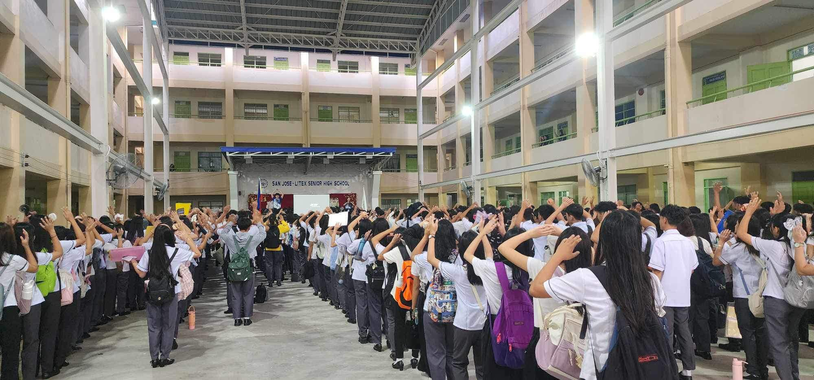
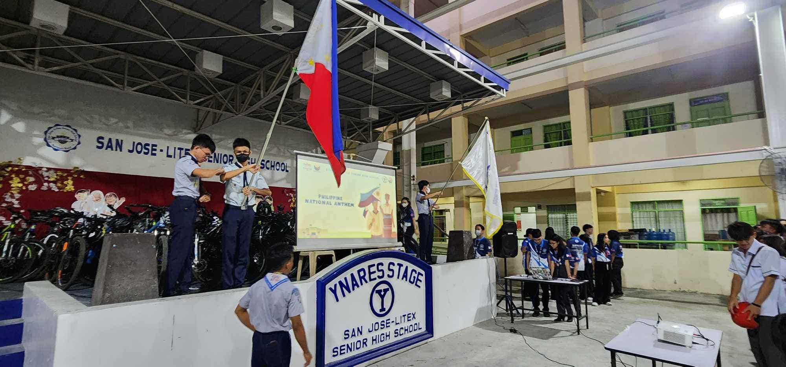

|
|
San Jose Litex Senior High School values diversity in background, experience,
interests, and perspectives. We seek to cultivate a campus environment where
all students have the opportunity to learn from each other’s experiences and
to think critically about their own views and preconceptions. The school provides
all students with the opportunity and tools to build community and connection
across racial, socioeconomic, geographical, and political lines that often
present barriers to greater understanding, mutual respect, and authentic friendship.
|